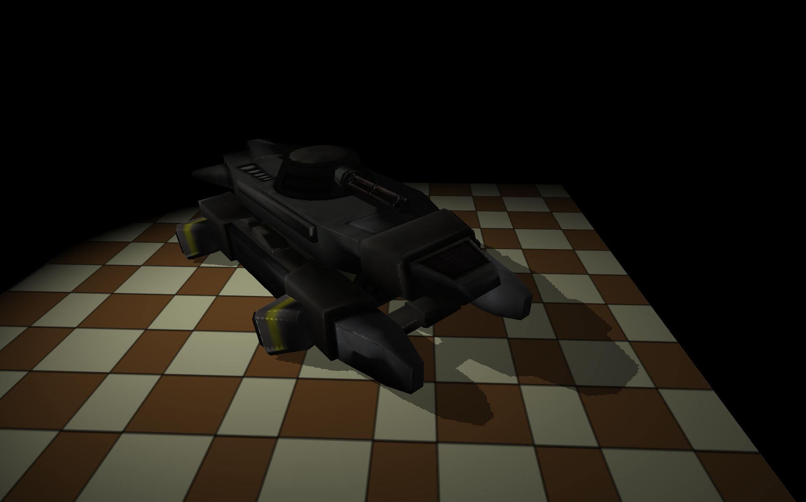

Background
In the previous tutorial we learned the basic principle behind the shadow mapping technique and saw how to render the depth into a texture and later display it on the screen by sampling from the depth buffer. In this tutorial we will see how to use this capability and display the shadow itself.
We know that shadow mapping is a two-pass technique and that in the first pass the scene is rendered from the point of view of the light. Let's review what happens to the Z component of the position vector during that first pass:
- The position of the vertices that are fed into the vertex shader are generally specified in local space.
- The vertex shader transforms the position from local space to clip space and forwards it down the pipeline (see tutorial 12 if you need a refresher about clip space).
- The rasterizer performs perspective divide (a division of the position vector by its W component). This takes the position vector from clip space to NDC space. In NDC space everything which ends up on the screen has a X, Y and Z components in the range [-1,1]. Things outside these ranges are clipped away.
- The rasterizer maps the X and Y of the position vector to the dimensions of the framebuffer (e.g. 800x600, 1024x768, etc). The results are the screen space coordinates of the position vector.
- The rasterizer takes the screen space coordinates of the three triangle vertices and interpolates them to create the unique coordinates for each pixel that the triangle covers. The Z value (still in the [-1,1] range) is also interpolated so every pixel has its own depth.
- Since we disabled color writes in the first pass the fragment shader is disabled. The depth test, however, still executes. To compare the Z value of the current pixel with the one in the buffer the screen space coordinates of the pixel are used to fetch the depth from the buffer. If the depth of the new pixel is smaller than the stored one the buffer is updated (and if color writes were enabled the color buffer would have also been updated).
In the process above we saw how the depth value from the light point of view is calculated and stored. In the second pass we render from the camera point of view so naturally we get a different depth. But we need both depth values - one to get the triangles ordered correctly on the screen and the other to check what is inside the shadow and what is not. The trick in shadow mapping is to maintain two position vectors and two WVP matrices while traveling through the 3D pipeline. One WVP matrix is calculated from the light point of view and the other from the camera point of view. The vertex shader gets one position vector in local space as usual, but it outputs two vectors:
- The builtin gl_Position which is the result of transforming the position by the camera WVP matrix.
- A "plain" vector which is the result of transforming the position by the light WVP matrix.
The first vector will go through above process (--> NDC space...etc) and these will be used for the regular rasterization. The second vector will simply be interpolated by the rasterizer across the triangle face and each fragment shader invocation will be provided with its own value. So now for each physical pixel we also have a clip space coordinate of the same point in the original triangle when looking at it from the light point of view. It is very likely that the physical pixels from the two point of views are different but the general location in the triangle is the same. All that remains is to somehow use that clip space coordinate in order to fetch the depth value from the shadow map. After that we can compare the depth to the one in the clip space coordinate and if the stored depth is smaller then it means the pixel is in shadow (because another pixel had the same clip space coordinate but with a smaller depth).
So how can we fetch the depth in the fragment shader using the clip space coordinate that was calculated by trasforming the position by the light WVP matrix? When we start out we are basically in step 2 above.
- Since the fragment shader receives the clip space coordinate as a standard vertex attribute the rasterizer does not perform perspective divide on it (only what goes through gl_Position). But this is something that is very easy to do manually in the shader. We divide the coordinate by its W component and get a coordinate in NDC space.
- We know that in NDC the X and Y range from -1 to 1. In step 4 above the rasterizer maps the NDC coordinates to screen space and uses them to store the depth. We are going to sample the depth and for that we need a texture coordinate in the range [0,1]. If we linearly map the range [-1,1] to [0,1] we will get a texture coordinate that will map to the same location in the shadow map. Example: the X in NDC is zero and the width of the texture is 800. Zero in NDC needs to be mapped to 0.5 in the texture coordinate space (because it is half way between -1 and 1). The texture coordinate 0.5 is mapped to 400 in the texture which is the same location that is calculated by the rasterizer when it performs screen space transform.
- Transforming X and Y from NDC space to texture space is done as follows:
- u = 0.5 * X + 0.5
- v = 0.5 * Y + 0.5
Source walkthru
(lighting_technique.h:80)
class LightingTechnique : public Technique {
public:
...
void SetLightWVP(const Matrix4f& LightWVP);
void SetShadowMapTextureUnit(unsigned int TextureUnit);
...
private:
GLuint m_LightWVPLocation;
GLuint m_shadowMapLocation;
...
The lighting technique needs a couple of new attributes. A WVP matrix that is calculated from the light point of view and a texture unit for the shadow map. We will continue using texture unit 0 for the regular texture that is mapped on the object and will dedicate texture unit 1 for the shadow map.
(lighting.vs)
#version 330
layout (location = 0) in vec3 Position;
layout (location = 1) in vec2 TexCoord;
layout (location = 2) in vec3 Normal;
uniform mat4 gWVP;
uniform mat4 gLightWVP;
uniform mat4 gWorld;
out vec4 LightSpacePos;
out vec2 TexCoord0;
out vec3 Normal0;
out vec3 WorldPos0;
void main()
{
gl_Position = gWVP * vec4(Position, 1.0);
LightSpacePos = gLightWVP * vec4(Position, 1.0);
TexCoord0 = TexCoord;
Normal0 = (gWorld * vec4(Normal, 0.0)).xyz;
WorldPos0 = (gWorld * vec4(Position, 1.0)).xyz;
}
This is the updated vertex shader of the LightingTechnique class with the additions marked in bold text. We have an additional WVP matrix uniform variable and a 4-vector as output which contains the clip space coordinates calculated by transforming the position by the light WVP matrix. As you can see, in the vertex shader of the first pass the variable gWVP contained the same matrix as gLightWVP here and gl_Position there got the same value as LightSpacePos here. But since LightSpacePos is just a standard vector it does not get an automatic perspective division as gl_Position. We will do this manually in the fragment shader below.
(lighting.fs:58)
float CalcShadowFactor(vec4 LightSpacePos)
{
vec3 ProjCoords = LightSpacePos.xyz / LightSpacePos.w;
vec2 UVCoords;
UVCoords.x = 0.5 * ProjCoords.x + 0.5;
UVCoords.y = 0.5 * ProjCoords.y + 0.5;
float z = 0.5 * ProjCoords.z + 0.5;
float Depth = texture(gShadowMap, UVCoords).x;
if (Depth < (z + 0.00001))
return 0.5;
else
return 1.0;
}
This function is used in the fragment shader to calculate the shadow factor of a pixel. The shadow factor is a new factor in the light equation. We simply multiply the result of our current light equation by that factor and this causes some attenuation of the light in pixels that are determined to be shadowed. The function takes the interpolated LightSpacePos vector that was passed from the vertex shader. The first step is to perform perspective division - we divide the XYZ components by the W component. This transfers the vector to NDC space. Next we prepare a 2D coordinate vector to be used as the texture coordinate and initialize it by transforming the LightSpacePos vector from NDC to texture space according to the equation in the background section. The texture coordinates are used to fetch the depth from the shadow map. This is the depth of the closest location from all the points in the scene that are projected to this pixel. We compare that depth to the depth of the current pixel and if it is smaller return a shadow factor of 0.5, else the shadow factor is 1.0 (no shadow). The Z from the NDC space also goes through transformation from the (-1,1) range to (0,1) range because we have to be in the same space when we compare. Notice that we add a small epsilon value to the current pixel's depth. This is to avoid precision errors that are inherent when dealing with floating point values.
(lighting.fs:72)
vec4 CalcLightInternal(BaseLight Light, vec3 LightDirection, vec3 Normal, float ShadowFactor)
{
...
return (AmbientColor + ShadowFactor * (DiffuseColor + SpecularColor));
}
The changes to the core function that does the lighting calculations are minimal. The caller must pass the shadow factor and the diffuse and specular colors are modulated by that factor. Ambient light is not affected by the shadow because by definition, it is everywhere.
(lighting.fs:97)
vec4 CalcDirectionalLight(vec3 Normal)
{
return CalcLightInternal(gDirectionalLight.Base, gDirectionalLight.Direction, Normal, 1.0);
}
Our shadow mapping implementation is currently limited to spot lights. In order to calculate the WVP matrix of the light it needs both a position and a direction which point light and directional light lack. We will add the missing features in the future but for now we simply use a shadow factor of 1 for the directional light.
(lighting.fs:102)
vec4 CalcPointLight(struct PointLight l, vec3 Normal, vec4 LightSpacePos)
{
vec3 LightDirection = WorldPos0 - l.Position;
float Distance = length(LightDirection);
LightDirection = normalize(LightDirection);
float ShadowFactor = CalcShadowFactor(LightSpacePos);
vec4 Color = CalcLightInternal(l.Base, LightDirection, Normal, ShadowFactor);
float Attenuation = l.Atten.Constant +
l.Atten.Linear * Distance +
l.Atten.Exp * Distance * Distance;
return Color / Attenuation;
}
Since the spot light is actually calculated using a point light this function now takes the extra parameter of the light space position and calculates the shadow factor. It passes it on to CalcLightInternal() which uses it as described above.
(lighting.fs:117)
vec4 CalcSpotLight(struct SpotLight l, vec3 Normal, vec4 LightSpacePos)
{
vec3 LightToPixel = normalize(WorldPos0 - l.Base.Position);
float SpotFactor = dot(LightToPixel, l.Direction);
if (SpotFactor > l.Cutoff) {
vec4 Color = CalcPointLight(l.Base, Normal, LightSpacePos);
return Color * (1.0 - (1.0 - SpotFactor) * 1.0/(1.0 - l.Cutoff));
}
else {
return vec4(0,0,0,0);
}
}
The spot light function simply passes through the light space position to the point light function.
(lighting.fs:131)
void main()
{
vec3 Normal = normalize(Normal0);
vec4 TotalLight = CalcDirectionalLight(Normal);
for (int i = 0 ; i < gNumPointLights ; i++) {
TotalLight += CalcPointLight(gPointLights[i], Normal, LightSpacePos);
}
for (int i = 0 ; i < gNumSpotLights ; i++) {
TotalLight += CalcSpotLight(gSpotLights[i], Normal, LightSpacePos);
}
vec4 SampledColor = texture2D(gSampler, TexCoord0.xy);
FragColor = SampledColor * TotalLight;
}
Finally, the main function of the fragment shader. We are using the same light space position vector for both spot and point lights even though only spot lights are supported. This limitation will be fixed in the future. We have finished reviewing the changes in the lighting technique and will now take a look at the application code.
(tutorial24.cpp:86)
m_pLightingEffect = new LightingTechnique();
if (!m_pLightingEffect->Init()) {
printf("Error initializing the lighting technique\n");
return false;
}
m_pLightingEffect->Enable();
m_pLightingEffect->SetSpotLights(1, &m_spotLight);
m_pLightingEffect->SetTextureUnit(0);
m_pLightingEffect->SetShadowMapTextureUnit(1);
This code which sets up the LightingTechnique is part of the Init() function so it is executed only once during startup. Here we set the uniform values that will not change from frame to frame. Our standard texture unit for the texture which belongs to the mesh is 0 and we dedicate texture unit 1 for the shadow map. Remember that the shader program must be enabled before its uniform variables are set up and they remain persistent as long as the program is not relinked. This is convenient because it allows you to switch between shader programs and only worry about the uniform variables that are dynamic. Uniform variables that never change can be set once during startup.
(tutorial24.cpp:129)
virtual void RenderSceneCB()
{
m_pGameCamera->OnRender();
m_scale += 0.05f;
ShadowMapPass();
RenderPass();
glutSwapBuffers();
}
Nothing has changed in the main render function - first we take care of the global stuff such as the camera and the scale factor which is used for rotating the mesh. Then we do the shadow pass followed by the render pass.
(tutorial24.cpp:141)
virtual void ShadowMapPass()
{
m_shadowMapFBO.BindForWriting();
glClear(GL_DEPTH_BUFFER_BIT);
m_pShadowMapEffect->Enable();
Pipeline p;
p.Scale(0.1f, 0.1f, 0.1f);
p.Rotate(0.0f, m_scale, 0.0f);
p.WorldPos(0.0f, 0.0f, 3.0f);
p.SetCamera(m_spotLight.Position, m_spotLight.Direction, Vector3f(0.0f, 1.0f, 0.0f));
p.SetPerspectiveProj(30.0f, WINDOW_WIDTH, WINDOW_HEIGHT, 1.0f, 50.0f);
m_pShadowMapEffect->SetWVP(p.GetWVPTrans());
m_pMesh->Render();
glBindFramebuffer(GL_FRAMEBUFFER, 0);
}
This is basically the same shadow pass from the previous tutorial. The only change is that we enable the shadow map technique each time because we toggle between this technique and the lighting technique. Note that even though our scene contains both a mesh and a quad that serves as the ground, only the mesh is rendered into the shadow map. The reason is that the ground cannot cast shadows. This is one of the optimizations that we can do when we know something about the type of the object.
(tutorial24.cpp:168)
virtual void RenderPass()
{
glClear(GL_COLOR_BUFFER_BIT | GL_DEPTH_BUFFER_BIT);
m_pLightingEffect->Enable();
m_pLightingEffect->SetEyeWorldPos(m_pGameCamera->GetPos());
m_shadowMapFBO.BindForReading(GL_TEXTURE1);
Pipeline p;
p.SetPerspectiveProj(30.0f, WINDOW_WIDTH, WINDOW_HEIGHT, 1.0f, 50.0f);
p.Scale(10.0f, 10.0f, 10.0f);
p.WorldPos(0.0f, 0.0f, 1.0f);
p.Rotate(90.0f, 0.0f, 0.0f);
p.SetCamera(m_pGameCamera->GetPos(), m_pGameCamera->GetTarget(), m_pGameCamera->GetUp());
m_pLightingEffect->SetWVP(p.GetWVPTrans());
m_pLightingEffect->SetWorldMatrix(p.GetWorldTrans());
p.SetCamera(m_spotLight.Position, m_spotLight.Direction, Vector3f(0.0f, 1.0f, 0.0f));
m_pLightingEffect->SetLightWVP(p.GetWVPTrans());
m_pGroundTex->Bind(GL_TEXTURE0);
m_pQuad->Render();
p.Scale(0.1f, 0.1f, 0.1f);
p.Rotate(0.0f, m_scale, 0.0f);
p.WorldPos(0.0f, 0.0f, 3.0f);
p.SetCamera(m_pGameCamera->GetPos(), m_pGameCamera->GetTarget(), m_pGameCamera->GetUp());
m_pLightingEffect->SetWVP(p.GetWVPTrans());
m_pLightingEffect->SetWorldMatrix(p.GetWorldTrans());
p.SetCamera(m_spotLight.Position, m_spotLight.Direction, Vector3f(0.0f, 1.0f, 0.0f));
m_pLightingEffect->SetLightWVP(p.GetWVPTrans());
m_pMesh->Render();
}
The render pass starts the same way as in the previous tutorial - we clear both the depth and color buffers, replace the shadow map technique with the lighting technique and bind the shadow map frame buffer object for reading on texture unit 1. Next we render the quad so that it will serve as the ground on which the shadow will appear. It is scaled up a bit, rotated 90 degrees around the X axis (because originally it is facing the camera) and positioned. Note how the WVP is updated based on the location of the camera but for the light WVP we move the camera to the light position. Since the quad model comes without its own texture we manually bind a texture here. The mesh is rendered in the same way.
Here's an example of the shadow:
